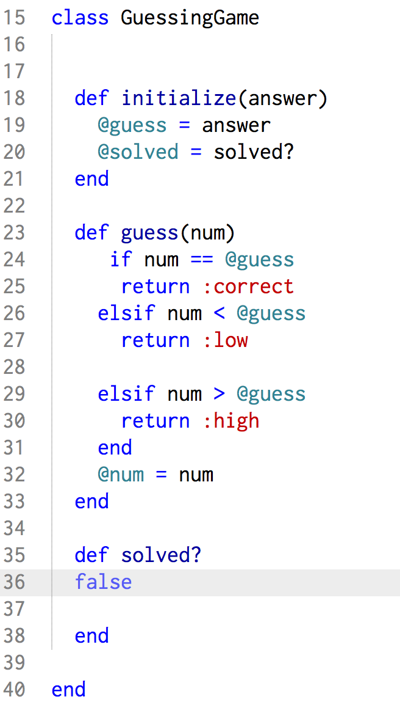
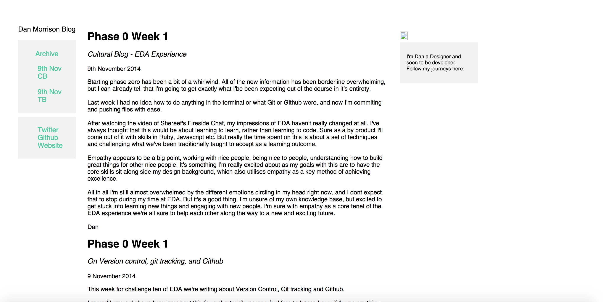
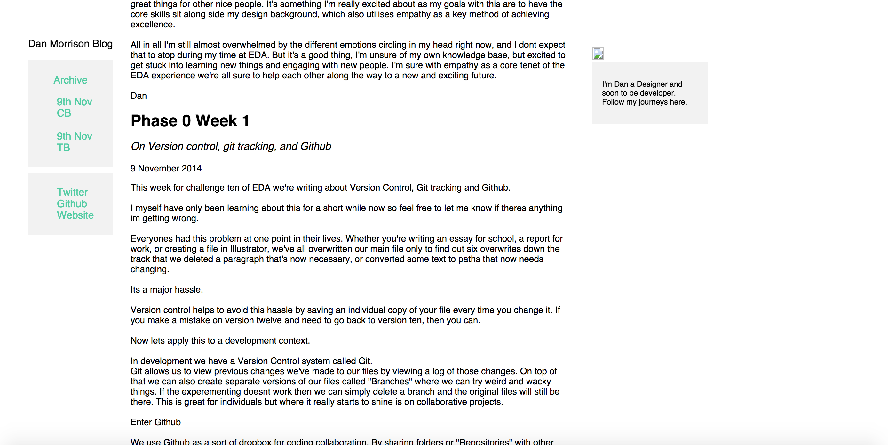
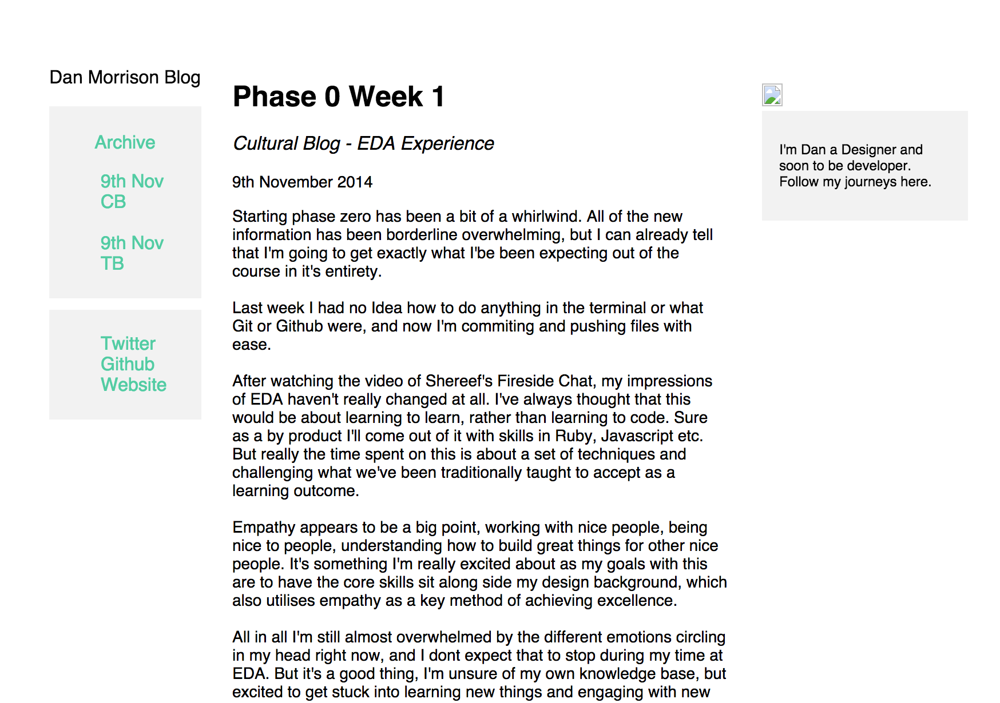

Twitter
Twitter Github
GithubPhase 0 Week 9
Questions
15th January 2015
It's the last week before the full emersion phase starts! This week we're looking at questions, what makes a good one and what makes a bad one. I'll start off by providing a quick run down of what makes a good question, followed by a break down of a badly asked question and finally a rework to make that into a good question.
So what makes a good question?
1. The Elevator Pitch
You may very well have heard of the concept of an elevator pitch, to clarify the elevator pitch is a method of thinking which is commonly used by entrepreneurs with young businesses to pitch for venture capital. For the rest of us, it's a great exercise to really hone in on the key points and most important parts of an idea, job description or for the purposes of this post, a question.
The main purpose of an elevator pitch is to disitll your question to its most understandable but also most interesting point. The idea is that if you know exactly what you need to ask and where your problem is occuring, then you can more quickly begin a discussion on how to solve that problem.An elevator pitch style question can make for a good title before getting into the detail in paragraphs if posting online, and can save you alot of confusion and mumbling if asking in person.
2. Provide a broken example
Once you've distilled your question into an easily understandable pitch, you'll need to provide an example of what you're talking about. This can help speed things along even further, as others may pick up on parts of code you've not even noticed yourself. Again its about being specific, theres no point in providing your enitre programme if you're only asking about a single block.
3. Read it twice
Correct spelling and grammar to the best of your own abilities are as essential as a good question itself. As much as it sounds like your old english teacher speaking, make sure to proof read your question before posting. It can save you having to explain yourself again and makes all of the thinking you did on your elevator pitch worth it.
4. Include relevant tags
If you're posting online make sure to include site appropriate tags. They can be the difference between someone with the knowledge to answer your question finding it or not.
5. Keep the discussion going!
Remember to provide feedback to the answers provided to your question. If someone provides a solution but didn't quite understand the context correctly, let them know and try to help them understand how their solution differs from what you were looking for. In the spirit of kindness if someone helps you out with an answer that is exactly what you were looking for, thanks them!
A not so good question
Here is an example of a question I asked a while ago, complete with code snippet:
"Hey guys having a bit of trouble with a challenge and wondering if anyone can help. Ive managed to put together the parts of this guessing game to return correct, high or low, but can't figure out what I need to write to change solved between true and false based on those returns"

Here I've provided a code snippet in the correct format, but have already fallen at the first hurdle by not being specific enough with my question (elevator) pitch.
A better question
A better way to ask this question would have been:
"Hey guys,in ruby, how can I get my solved function to change to true or false based on the return value of my guess function?"
This is a lot better and when paired with the above image, gives more specific context as to what im asking about. By no means is this question the golden standard but it has considerably more thought put into it and could be the difference between a good answer or no answer at all.
Thats it for this week, but wish me luck for the begining of full emersion when we start Phase 1 next week!
Dan
Phase 0 Week 8
Conflict
10th January 2015
This weeks cultural blog is on conflict and will be written as another Q&A style post.
Discuss a time you had a conflict. What was it about? What happened?
The conlfict I've chosen to discuss is centered around my choice to come to Dev Academy. After experiencing the highs and lows of university life my first job was initially rewarding before ulitmately becoming boring and unfulfilling. While looking for other options I was told about Dev Academy by a friend, which then set of a whole trail of doubt.
What was the source of the conflict?
The source of the confilct ended up being doubt, both doubt about my own skill set as well as doubt about whether it was really the direction I wanted to head in career wise. This in-turn could be boiled further down to a lack of self confidence and self assertion.
What basic emotions did you feel upon analyzing the conflict?
The basic emotions I felt were fairly varied including, confusion, sadness, disapointment, but then also leading into happiness, and excitement as I worked through it.
What actions did you take to resolve your conflict?
I did alot of thinking and research into the industry, including contacting people in it, the languages that were taught, the course itself and also my own career path and where I wanted to be later in life. It helped me to realise that it was well worth giving it a go, as tech was already a big passion of mine and there were a a lot more unexplored opportunities within the industry compared to my current graphic focused industry.
If you could go back, what would you do differently, if anything?
I think next time I would back myself from the get go a bit more. Initially my thoughts were that I wasn't intelligent enough to embark into something like computer science but after thinking about my history I realised that I should be able to apply myself to the subject. In terms of the research that I did, I would try to condense it down to a shorter time scale as if I had, I may have been able to get into an earlier cohort.
What did you learn from this experience?
To back myself! One of the main sources of the conflict was self doubt and I've found that when I'm confident about myself and my abilities I can achieve much greater things. Thinking back on any time of great success throughout my life they've all be when I've been confident in my own abilities so a little bit less self doubt can go a long way!
Dan
Phase 0 Week 8
SQL Injection
10th January 2015
This weeks technical blog is on SQL Injection, which is essentially a form of database hacking. To preface, SQL is a language which allows interaction with databases online, it's used all over the web in things like request forms, and login boxes. Code injection is a technique which is used to attack these data driven sites and applications in order to alter or steal data. SQL injection works by inserting malicious SQL statements into these sites and applications.
In a legitimate use of something like a login box on many of the websites you might come across on the web you would enter your details into the name and password fields which would cause that website or web app to talk to its database in order to determine whether or not your details are correct. But in an illegitimate use, an attacker can submit a specific line of code in order to run commands that weren't intended by the designers. This in turn gives them access to far more data than the average person, some of it being potentially sensitive.
This is all possible due to the nature of websites and web apps. As a member of the public you need access to inputs that allow you to interact with a website, such as with login boxes, and these websites and apps need to be able to communicate with their databases for informational purposes. Therefore anyone with a browser, a good knowledge of the SQL language, and a bit of creativity can execute malicious attacks on vulnerable websites. Usually a website/app will query its database based on a set of pre programmed commands e.g matching your input of a USERNAME and PASSWORD with pairs of USERNAMES and PASSWORDS in its database. But if the input fields are poorly guarded or "santized" then an attacker has the possibility of adding his or her own commands. One such execution of this is entering a valid username and then in the password field entering 'password' OR 'x' = 'x'. Since the computer is looking for return value of true when quering passwords and 'x' does indeed equal 'x' this should allow the attacker to gain access to this account.
The implications of this mean that not only can attackers gain access to the information within the sites database, changing it and taking it for their own personal use, they can also use a DROP command to destroy entire tables worth of information.
Thats the general idea of SQL injection, I've come to the end of my time this week but I'll list my sources below for futher reading if you're at all interested.
Dan
http://technet.microsoft.com/en-us/library/ms161953(v=sql.105).aspx
http://www.acunetix.com/websitesecurity/sql-injection/
http://sqlzoo.net/hack/
http://www.w3schools.com/sql/sql_injection.asp
Phase 0 Week 7
Values
23rd December 2014
This weeks cultural blog follows on from last weeks blog on stereotype threat. Today I'll be discussing my personal values and why they're important to me.
Values that are important to me include but are not limited to: Accomplishment, Adventure, Achievement, Ambition, Challenge, Community, Compassion, Confidence, Control, Courage, Creativity, Integrity, Justice, Meaningful Work, Quality, Recognition, and Truth.
On a Scale from one to five on how much I try to live up to these values:
Accomplishment 4
Adventure 2
Achievement 4
Ambition 5
Challenge 4
Community 3
Compassion 5
Confidence 3
Control 4
Courage 3
Creativity 5
Integrity 5
Justice 5
Meaningful Work 4
Quality 4
Recognition 2
Truth 4
In particular Truth and Integrity are important to me, as well as Justice, and I believe that all three go hand in hand. I've always been a particularly just person and have never liked the thought of dishonest people getting away with things. I believe that if we are all truthful and maintain a solid sense of justice then the world can be a fairer place for everyone. This tends to blend well with my sense of compassion and i'll often give people benefit of the doubt or a second chance (as opposing as that may seem to the justice side of things).
Advice - The last topic I asked someone for advice on was ambition and accomplishment. I had discussed ambitions and what accomplishment is with my parents and it was nice to get some advice and a good grounding on what both can really mean in a lifetime.
Values and StereoType Threat - I feel like my particular values all combine well to combat stereotype threat, I'm compassionate enough witha good enough sense of community to think about things twice instead of just taking the "common" opinion and my sense of Justice will likely never allow me to effectively participate in puporting stereotypes and should infact help me to reassure those who are facing stereotype threat.
Dan
Phase 0 Week 7
JavaScript vs Ruby
23rd December 2014
This weeks technical blog is on differences between JavaScript and Ruby, namely the differences between hashes and objects.
Starting off with the smaller details JavaScript objects are referenced as property and value pairs while ruby hashes are key and value pairs, this ends up making more sense down the line and I'll explain it as part of a bigger difference between the two soon. Javascript objects are accessed with objectname.propertyname and added to with objectname.propertyname = value, where as hashes are accessed with hashname[:propertyname] and added to with hashname[:newproperty] = value. Now comes the one of the bigger differences, while both a ways of organising data structures; in JavaScript, almost everything is an object, where as in Ruby Hashes are created specifically as "dictionaries". This means that the property and value pairs I talked about earlier now make a lot more sense when you think of every object (even pre defined ones) having properties and values that can be accessed (within thier relative scope). Hashes on the other hand can still be accessed but dont serve to make up as much of Ruby, as Ruby is also made up primarily of its own objects and classes.
Unfortunately thats where my understanding ends at this stage, so this will have to be a short post today, hopefully a little further down the line I'll be able to do a second update once I've had a bit more time using both!
Dan
Phase 0 Week 6
Stereotype Threat
15 December 2014
This weeks cultural blog is on Stereotype Threat. Stereotype Threat in a nutshell is when your performance in any given task is affected negatively by a cultural stereotype.
You might think that being a young white male I'd have avoided this during my lifetime as I'm in what is likely to be seen by many as a highly privileged group, but like most people even I have expereinced the negative implications of Stereotype threat. During my childhood years I achieved quite well academically but that achievement took a slight dive during highschool when I began to realise that my passions were with creative subjects. While I still took academic classes I identified myself with a creative stereotype, namely that creatives were no good in academia. Of course when I came to university to study design my eyes were opened to the creative and academic combinations that design thinking yeilded, but still my engagement with subjects such as math and english during the highschool years dropped(not largely but enough to cause my achievement to fall a level), largely due to the pattern of thought that you could not be both an academic and a creative.
While this example and its consequences may not be as extreme as some others the process of realisation that creatives could also be academics was an enlightening one and ultimately taught me to look upon simmilar situations in a different light.
The culture that we need to foster in any environment, be it a workplace or a institute of learing, is one of encouragement and acceptance. Everyone has faults but I believe that we are all also capable of achieving much more than stereotypes would suggest. As such, if I see someone struggling I usually do my best to find out why, and help them to work through ways that they can achieve their goal, doing my best to avoid mentioning any cultural, racial or gender stereotypes. The more we can provide others with that moment of realisation that stereotypes are infact wrong (such as the one I had at university), the better we can help each other to perform, and in-turn the greater we can achieve at a societal level.
Thats the bulk of it for this week anyway but thanks again for reading!
Dan
Phase 0 Week 6
Variable Scope in Ruby
14 December 2014
This weeks technical blog is on Variable Scope in Ruby, the different types of variables and how they should be used.
First lets talk about scope. Scope defines where in a programme a variable is accessable. For this post we'll use the comparison of rooms in the Pentagon, where different types of people (or variables) have different security clearance levels (or scope)! Wacky, I know. To add an extra layer some people (variables) have a great fashion sense and are able to change what they look like more often than others.
Now lets list the different types of variables and what they look like, and I'll give you a run down on how they relate to our Pentagon comparison:
Global variable - which have a $ at the beggining of their names like this: $global_variable
Instance variable - which have an @ at the beggining of their names like this: @instance_variable
Local Variable - which start with either a lowercase letter or an underscore like this: instance_variable
Class Variable - which start with two @ symbols before their names like this: @@class_variable
Constant - which are defined by capital letters like this: CONSTANT
If you need to find out what sort of a variable an object is and you can see any of these markers you can use defined? to find out and print it to the terminal.
Now lets look at the different levels of clearance (or Scope) starting with the little guys and working our way up to the top dog.
First up is the Local Variable. Local variables are confined to where ever they have been defined. In Ruby this means that if your define a local variable named "Suzy" within a method named "office 1", then "Suzy" will only be allowed to move within "Office 1". She can't move outside to another method named "Office 2" because she is only able to move within her LOCAL scope. In terms of our Pentagon comparison Suzy works on front desk, meaning her swipe card will only allow her to access the lobby where her desk is located and nowhere else. Unfortunately for Suzy she has the least access to the entire building with her swipe card only getting her into a single room! While she's at work shes confined to that room and cant even get into a break room to eat her lunch, which is pretty rude in my opinion. Suzy does have great fashion sense though which means she can change her appearance (or value) whenever she likes.
Next up the ladder is the Instance Variable. Instance Variables can be accessed across everything in their respective classes but not outside of them. They can also change the values of their objects and only affect those specific objects. This means that if your Instance Variable "Ken" is defined in a class "Defence_Office" then "Ken" is able to be accessed across all methods loops etc in "Defence_Office". In our Pentagon this almost explains itself. Ken works in the Defence Department which may comprise of many smaller rooms including weapons development, drone monitoring, and the strategy room. Kens swipe card allows him to move between any room he would like but only within the Defence department, and unfortunately for Ken his clearance dosent extend to the front desk area so he's not able to talk to Suzy. While Suzy changes her whole outfit in one go however, Ken tends to change his bit by bit. He can change his socks one day and his shirt the next, so his ability to change is a bit more nuanced.
Next theres the Class Variable. Class Variables are very simmilar to Instance Variables except that when changed they are changed across all instances of that class. This means that if you change a value, say the "Shoes" your class variable named "Steve" all instances of Steve will also change the value of "Shoes". In our Pentagon the Steves are a crack team of Defence department guys. They have the same sort of clearance as Ken does but nobody really knows who they are indiviually because they all look and dress the same. New Steves come and go but their strange team culture means that if one of their ties is purple this week then all of their ties are purple.
Constants are the next up the ladder. They can be assigned values within a module or class making them simmilar to instance or class variables but should not be changed once defined (though the possibility exists their name pretty much states their intention.) They also shouldnt be defined within methods. In our Pentagon the Constant is an old fella named George. Hes been there longer than anyone can remember and rumor has it that he's had the same pair of shoes since he began his job there in 1943. He has some simmilar access to Ken and the Steves but is a grumpy old bugger who doesnt like being how to do his job (he wont be DEFINED by anyone else.)
Lastly we have the top dog, the Global Variable. Global variables are accessable from anywhere in a programme meaning that your global variable "Condalezza" can travel anywhere in your programme "Pentagon". Global Variables are generally recommended against for this reason as if they are involved in bugs or errors they can be hard to track down. In our Pentagon Condalezza has swipe access to the entire building. It is possible for her to change her clothes but due to her super important position she trys not to. Theres also only one of her position in the whole building as having any more than one can fast start to cause problems.
Dodgey Architecture and Strange characters aside, the Pentagon model give you a general idea of variable scope in Ruby and what each variable can and cant do. Thats all I've got time for this week but thanks for reading!
Dan
Phase 0 Week 5
Sharing is caring
7 December 2014
This week we're talking about feedback.I think it'll be easier to do this one Q&A style so Ill break it down below and try to answer the questions as best I can.
Pairing:
Q: What was it like to pair with others to solve challenges?
A: Pairing at the moment can be a bit difficult for me, I'm typically more at ease doing things in person, and also find it easier to communicate face to face. In saying that, everyone I've paired with so far has been great, they've all been really easy to get along with and it's nice to know that alot of us are in the same boat skills wise. Often I'll spend longer on a pairing challenge than on an individual challenge but the answers then to come out quite a bit fuller, which I think is the result of discussion.
Q: Was something particularly fun or rewarding?
A: My favourite part of any challenge is the moment when you crack a particurly difficult code block and the pieces start clicking together. I found that when I'm working on a challenge with someone else and we get one of those moments it's even better. This is probably because of the increase sense of accomplishment having solved it as a team, and I think that only serves to strengthen partnerships within the cohort for me.
Q: Was something frustrating and difficult for you?
A: This isn't exclusive to pairing challenges but I find it frustrating when I come to the end of my knowledge. Knowing where to look next is always a bit of a challenge especially after already having researched a topic. I think that this is probably made easier though, by having someone to talk to about the challenge.
Feedback
Q: How did you feel when you read your feedback?
A: At this stage I've not been able to read any of my feedback! Apparently its still waiting for review but hopefully its good and critical when I do get it. I personally preffer for people to tell me what I could do better upfront so that I can prep for next time right away.
Q: Was the feedback you received helpful to your learning?
A: N/A
Q: Based on the feedback you've received, what are you going to do to improve next time you pair?
A: So far I've only gotten verbal feedback at the end of sessions, but I think looking back on things I should continue to start the sessions with a personal catch up before we start coding. In this weeks one that was really helpful and made it alot easier to establish roles during the challenge.
Q: How was it to write feedback?
A: As a designer I'm very much of two minds on feedback and writing it. I myself value critical feedback on how I can improve over anything else, and have been trained to take it for what it is (instead of getting defensive about it). I realize that others aren't nessecarily quite so accustomed to it though so I'm trying to keep it positive without sugar coating it too much. All in all its a little bit difficult but hopefully everyone takes it for the improvements.
Q: What was most difficult for you when writing feedback for your pair?
A: Writing the critical parts is always to most difficult. Mostly because the wording of things can either make or break it. It usually takes me a short while to figure out how to suggest to someone ways they can improve themselves without sounding like I'm telling them how (difference between suggest and tell).
Q: Overall, what do you think of using pairing and feedback to guide your learning?
A: I think it's got great benefits. It's not second nature to me (remotely at least) but I'm finding that its easier with every session! Feedback is something that I value greatly so I really enjoy getting it, hopefully my EDA feedback comes through shortly!
Dan
Phase 0 Week 5
Ruby Classes
7 December2014
This week of phase 0 has been all about classes in Ruby.
A quick run down of classes.
While creating objects is all well and good with plenty of wriggle room to do some cool things, it only really works for individual items, that is to say, if you have more than one object with similar methods (for this post we'll use different types of beer), the process of creating each individual beer with a name, taste, and price is tedious. Classes help with this by creating a way to group these methods so and reduce the amount of work required.
Take this example:
class Beers
def initialize(taste,price,name)
@taste = taste
@price = price
@name = name
end
def taste
@taste
end
def price
@price
end
def name
@name
end
end
tuatara = Beers.new("good","average","Tuatara")
puts "#{tuatara.name} is a #{tuatara.taste} beer that costs an #{tuatara.price} amount."
This will print: "Tuatara is a good beer that costs an average amount."
In this example im able to assign three variables to each new beer, taste, price and name. I've used Tuatara as an example here but if I wanted to I could then create one for Founders, Macs or even Waikato! The main point is that by creating a single Class, I'm now able to create a set of new objects that all have the same behaviours(or methods). This example is fairly basic but gets the general point across, if you wanted to you could create more complex methods within the class to do things like determine the price of the beer based on market rates, or evaluate the taste based on ingredients.
Now for the bits and pieces of it. Classes always start with a capital letter (like Beers did). After that we can define an initialize method which will run everytime you create a new instance of Beers. In this case we've set it to require three values but it could be something as simple as a string like "Beers are good, whats your favourite?" that would print everytime you created a new Beer.
Next are the Instance Variables. Each one of these starts with an @ sign and is a way of saving values and reading them back. You'll notice that we defined a method for each one to run its value afterwards, but what you need to know is that the three values that we are asked for in the Initialize method are then saved to they can be repeated. The methods after them are instance methods which can be used for anything. Here we've used them to state the name of out instance variables from earlier, but as I mentioned earlier you could use them for many of the same things that you would a regular method.
Thats the basics of classes but there are much more to them, and if your interested I would recommend looking into the attribute method family which can make creating your instance variables much easier.
Thats all I've got time for this week but thanks for reading!
Dan
Phase 0 Week 4
Tech Issues and Net Neutrality
30th November 2014
This weeks cultural blog is on Tech Issues and more specifically on Net Neutrality.
Whether we're consumers of content on the internet, or creators of it, net Neutrality affects us all. The underpinning concept of it, is that the internet should be open for access and when you have a connection, your speeds when traveling to different sites should only be affected by their construction.
However some think that in an increasingly competitive consumer culture ISPs (or Internet Service Providers), might start running a "pay to play" system for web navigation speeds.
In short this means that companies with alot of money could pay to have their websites put in an "internet fast lane" of sorts, while those on a budget (see:most new business) would have speeds throttled. At best your connection to Sparks Lightbox service could speed right up and at worst, your sisters cake making business could get zero traffic due to ridiculous load times.
In a culture where transparency is increasingly demanded from any and all companies, both big and small, Net Neutrality is the very embodiement of old world corporate greed.
ISP's around the world are denying that there are any plans to introduce internet fast lanes or pay to play systems, but the only true way to prevent it is through binding legalities.
To keep the internet truely open, governments around the world would need to create laws that prevent ISPs from creating fast lanes and throttling speeds at users expense and to make that happen the world of consumers and creators alike need to come together and be heard.
For greater detail on Net Neutrailty visit www.savetheinternet.com
Dan
Phase 0 Week 4
Enumerable Methods
30th November 2014
This weeks technical blog is on enumerable methods, and more specifically on the group_by method.
The group_by method can be very handy for exactly what its name suggests, grouping things. In code form it looks like this.
.group_by{ |a| block} - where a is the content being grouped and block is the argument it can be grouped by.
Typically it will take an array and spit out a hash of groups and is a very useful method when sorting elements in an array.
For instance if I wanted to group an array of cities by first letter I could use
cites = ['Whakatane', 'Auckland', 'Paeroa', 'Wellington', 'Paris']
cities.group_by{ |a| a[0]}
which would return
=> {'W' = ['Whakatane', 'Wellington'], 'A' = ['Auckland'], 'P' = ['Paeroa', 'Paris']}
You can also sort by length, division, multiplication, or whatever other things you can think up for your code block.
Thats it form me for this week but thanks for reading!
Dan
Phase 0 Week 3
Thinking Style
23rd November 2014
This Weeks Cultural blog is on Thinking Styles.
It was interesting to find that my particular thinking style is that of a Concrete Random thinker, mostly because it seems to fit in pretty well with my Briggs-Myers result of ENTJ. I'm open to experimenting and taking risks but fall short in repeating tasks, probably largely due to the "do it once, do it right" attitude.
I always find these types of self reflexive tests interesting though, as it provides insight into personal shortcomings so that I might be able to address them in the future; or at least become a bit more self aware.
I think the two things I'll need to address going forward are the aversion to repeating tasks and the frustration with having to choose a single answer. As Ive learnt in Dev Academy so far, theres not always time to be a perfectionist which I think these particular traits only amplify.
Strategy wise, I really need to let certain things go, and be ok with leaving a task in a less than ideal state (in my opinion at least). If I can meet the learning outcomes and come back to them later for further study, then my time management should improve greatly.
Dan
Phase 0 Week 3
On Arrays and Hashes
23rd November 2014
This weeks technical blog is on the difference between Arrays and Hashes.
Before we get into the details lets look at the bigger picture. Arrays and Hashes are both ways of creating librarys of data. That is to say you can store different values within them. Say you really like cats; infact you like them so much that you have twenty of them. But your memory is also starting to fade and you need a way to keep track of all their names. You can create an Array or Hash to store all these names and call on them later depending on your preffered way of referencing.
This is where the major difference between the two comes in. While both store librarys of data, each piece of data in an Array is referenced with a number with the first number being 0, the second being 1, the third being 2 and so on and so forth. Hashs on the other hand are structured slightly differently; each piece of data in a hash is referenced with a key rather than a number. The key can be anything a name, a number, what ever you like, but you decide what it is.
So while an Array will operate like this:
['molly', 'ringo', 'butch', 'sunny', 'gutenburg']
With molly being number 0, ringo being number 1, butch being number 2, etc.
A hash will operate more like this:
['blackspot' => 'molly', 'glasses' => 'ringo', 'fatty' => 'butch', 'smiles' => 'sunny', 'paperman' => 'gutenburg']
With Mollys reference being 'blackspot', ringos reference being 'glasses' etc.
Both have their advantages namely being that Arrays are more useful for high effeciency tasks given their ability to be ordered and retrieved via numbers, and Hashs are more flexable, allowing for a greater level of specifity and reference if thats crucial to the task.
Dan
Phase 0 Week 2
CSS Positioning
22 November 2014
A bit of a late one this week but here we go! This weeks Technical Blog is on CSS Positioning and the difference between the Absolute, Relative and Fixed states.
Before we jump into the specifics lets preface the whole topic with a bit of analogue context. Imagine each browser window as a white piece of magical paper.A landscape rectangle with the ability to change size at will. Now imagine an element in that browser window, say, an image, or a block of text, as a coloured square of paper on top of your white piece of paper. This is how elements in a website work, they can be placed on top of each other, next to each other and can be placed off the page all together if you want them to be.
Now instead of moving them with our hands we need to move them with code, and thats where CSS positioning comes in.
Fixed Positioning
Fixed positioning is relative to your browsers window.
This means that a fixed element will always stay in its position no matter where your browser window goes.
In the following 3 images you can see how my left hand navigation and right hand about section are both fixed and will stay in their positions no matter if I scroll down on the page, or if I re-size the window.



In fact you can even try it on this window, go ahead and try resizing the window to see how the fixed elements behave in real time.
Relative Positioning
Relative positioning is relative to itself. That might sound confusing but really all you need to think of it as, is fixed positioning with a bit more wiggle room. Where as fixed position is positioned relative to the browser window, relative postioning is relative to where ever it thinks it is. In practice this means you can position a relative element, then scroll down the page, and the relative element will magically dissapear into the top of the window. You can try that right now as well, click on the archive button on the left hand side and try scrolling down to see what happens.
Absolute Positioning
Abosolute Positioning takes the law into its own hands. Where Fixed and Relative positioning go with the flow of the page and play nicely together, Absolute positioning plays by its own rules. An aboslute element doesn't care if your fixed or relative elements are pushing everything over to the right, it'll stay right where it is. Think of it as gluing one of those pieces of paper from earlier to your original page. Absolute elements can be placed anywhere and are relative to their parent elements (meaning the next element up that isn't static) or if there is no parent element then to the HTML tags.
I've run out of time for this weeks post though so hopefully thats explained well enough for now!
Until next time
Dan
Phase 0 Week 1
Cultural Blog - EDA Experience
9th November 2014
Starting phase zero has been a bit of a whirlwind. All of the new information has been borderline overwhelming, but I can already tell that I'm going to get exactly what I'be been expecting out of the course in it's entirety.
Last week I had no Idea how to do anything in the terminal or what Git or Github were, and now I'm commiting and pushing files with ease.
After watching the video of Shereef's Fireside Chat, my impressions of EDA haven't really changed at all.
I've always thought that this would be about learning to learn, rather than learning to code. Sure as a by product I'll come out of it with skills in Ruby, Javascript etc. But really the time spent on this is about a set of techniques and challenging what we've been traditionally taught to accept as a learning outcome.
Empathy appears to be a big point, working with nice people, being nice to people, understanding how to build great things for other nice people. It's something I'm really excited about as my goals with this are to have the core skills sit along side my design background, which also utilises empathy as a key method of achieving excellence.
All in all I'm still almost overwhelmed by the different emotions circling in my head right now, and I dont expect that to stop during my time at EDA. But it's a good thing, I'm unsure of my own knowledge base, but excited to get stuck into learning new things and engaging with new people. I'm sure with empathy as a core tenet of the EDA experience we're all sure to help each other along the way to a new and exciting future.
Dan
Phase 0 Week 1
On Version control, git tracking, and Github
9 November 2014
This week for challenge ten of EDA we're writing about Version Control, Git tracking and Github.
I myself have only been learning about this for a short while now so feel free to let me know if theres anything im getting wrong.
Everyones had this problem at one point in their lives. Whether you're writing an essay for school, a report for work, or creating a file in Illustrator, we've all overwritten our main file only to find out six overwrites down the track that we deleted a paragraph that's now necessary, or converted some text to paths that now needs changing.
Its a major hassle.
Version control helps to avoid this hassle by saving an individual copy of your file every time you change it. If you make a mistake on version twelve and need to go back to version ten, then you can.
Now lets apply this to a development context.
In development we have a Version Control system called Git.
Git allows us to view previous changes we've made to our files by viewing a log of those changes. On top of that we can also create separate versions of our files called "Branches" where we can try weird and wacky things. If the experementing doesnt work then we can simply delete a branch and the original files will still be there. This is great for individuals but where it really starts to shine is on collaborative projects.
Enter Github
We use Github as a sort of dropbox for coding collaboration. By sharing folders or "Repositories" with other developers we are able to all work on parts of a project at the same time. When I've finished my part I'll save or "commit" a version on my computer, and then push that up to the shared folder or "remote-repository". When all these systems work together great things begin to happen. Git makes sure that you dont overwrite each others files, but can instead merge them all togther. I can be working on part 1 and you can be working on part 2, and instead of my part 1 overwriting your part 2, it will merge them together in the repository.
All of this makes Git and Github ideal for developers, making collaborative development much easier.
Thats it for the first post Ill be back next week with something else new and exciting!
Dan
Back to Top